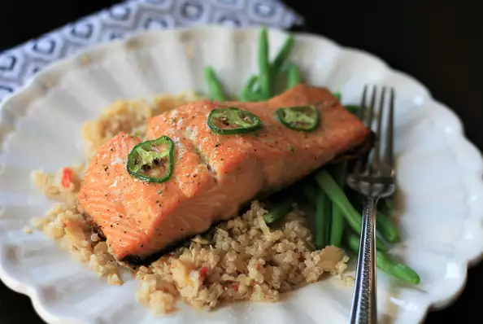

Firecracker Salmon

This salmon gets marinated in a maple and jalapeno sauce, then gets topped with additional maple syrup during
baking, for a perfect spicy-sweet marriage of flavors. This only has a hint of heat, so double the jalapeno if
desired. Use center-cut salmon fillets that are approximately 1 inch thick.
Ingredients
- ¼ cup maple syrup
- 1 medium jalapeno, cut in half width-wise
- 1 clove garlic, minced
- 1 tablespoon rice wine vinegar
- ½ teaspoon salt
- ⅛ teaspoon black pepper
- 2 (6 ounce) fillets salmon fillets
- salt and pepper to taste
- 2 teaspoons maple syrup
Steps
- Step 1
Combine 1/4 cup maple syrup, 1/2 of the jalapeno pepper, garlic, vinegar, salt, and black pepper in a mini food
processor or small blender jar; blend until smooth.
-
Step 2
lace salmon fillets in a gallon-sized resealable plastic bag. Pour marinade on top, seal, and refrigerate for 20
minutes. Remove from refrigerator and let the bag sit at room temperature for 10 minutes.
-
Step 3
Preheat the oven to 425 degrees F (220 degrees C). Line a baking sheet with parchment paper.
- Step 4
Remove salmon from marinade and pat dry. Place salmon on the prepared baking sheet and season with additional
salt and pepper. Slice remaining jalapeno pepper thinly and place on top of salmon.
- Step 5
Bake in the preheated oven for 10 minutes. Brush 2 teaspoons maple syrup onto the fillets and return to the hot
oven. Bake until fish flakes easily with a fork, an additional 3 to 5 minutes.